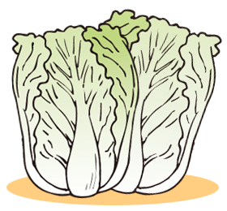

2019年2月号
「白菜」は切ってからも成長する？

これからの季節、「白菜」の旬が続きますが、日本には、大正時代から昭和初期にかけて一般に広まっていった野菜です。
その昔から、あると思われがちですが、意外と新しい野菜なのですね。
ということで、「お鍋によし！ 漬物によし！」の白菜ですが、今の季節は何といっても鍋の具材として大活躍です。煮ると「クタ」っととろけ、絶妙な甘みが際立ち、どんな食材とも愛称がいい、ある意味オールマイティな食材といえるでしょう。
そんな重宝な食材である白菜ですが、冷蔵庫の片隅で、カピカピに乾上った状態になってしまい、そのままゴミ箱に直行！という経験をしたことがある人も多いのでは？
白菜は立てて（白菜のお尻を下）保存するほうが日持ちしますが、お尻の部分には濡れたキッチンペーパーを敷き、水分が放出しないように乾いた新聞紙などで包んで暗所で保存、そして新聞紙が湿ってきたら取り替えることもお忘れなく。
また、購入時の白菜の見分け方としては、緑の外葉はついたままの、葉がシャキッとしたもので、葉の巻きがしっかりとした、ズッシリと重い、弾力性があるものを選びましょう。このとき、葉は白いものでなく、黄色っぽいものがおススメです。
最後になりましたが、半分に切ったものや、1/4のサイズで売られている白菜の場合は、出来るだけ切った断面が平らなものを選びましょう。
なぜなら、白菜は切ったあとも成長を続けるため、時間とともに断面が膨らんできます。
したがって、切った断面が平らなもののほうが、新鮮であるといえます。
この豆知識を持った皆さんは、「鍋奉行」とともに「白菜博士」にもなれるかもよ？？